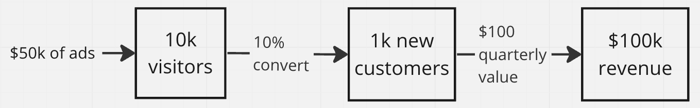

Validating page
Learn how to increase the chances that initiatives will produce the value you expect.
Overview
The purpose of validation is to ensure that initiatives will create the value you expect. We will learn:
Why validation is so important (but often overlooked)
Different approaches for validation
How to manage the validation process
For the exercise, you will create a plan to validate your initiatives and write up the results of the validation.
The following is the Google Slides presentation for this material:
Why Validate Initiatives?
Initiatives are very expensive. Not only in terms of communication, implementation, and deployment costs, but you also have to maintain and support the new feature after release.
Validation is often skipped because stakeholders and teams trust their instincts. However, spending a few days validating can often save organizations lots of time and treasure on features that will have little relative impact.
After validation, hopefully, the initiative’s estimated value and value confidence goes up. However, it’s even more of a victory for the process if the estimated value and value confidence goes down and the initiative is abandoned or deprioritized. Don’t be disappointed if it turns out this way!
Validation Techniques
There are many techniques that can be used to validate an initiative. The following are some common approaches:
|
Internal Customer Analytics If you are currently capturing data about user behavior, it’s possible you might get insight. |
Competitive Analysis Does one of your competitors provide this feature? This might be some evidence of value. Interviewing their customers about its importance will provide even more evidence. Here’s a sample guerrilla user test. |
External Customer Analytics Tools like Google Trends or SEM Rush can help you identify customer interests. Similarly, there are free and paid resources to explore. Another example is the Small Business Administration data sets. |
Surveying Customers If you have an existing customer base, ask them what they want. This can have extra benefits too. If customers see you take their feedback, they will trust you and have a better relationship. |
Market before you Make There’s a wide variety of techniques that let you market and gauge interest before you actually build. Here’s a list. Be careful with these techniques as they can annoy customers or potential customers if you don’t follow through. |
User Testing It’s possible to test the functionality before its built and see how users respond. You can test a wireframe, a fully designed mockup, or a mocked front-end. |
Validating the Promotion Initiative
% Off Promotion Code and Marketing Campaign
...
Problem
...
Impact
We hope to increase our revenue by 2x the amount spent on Marketing ads.
- Value - $118,750 [updated]
- Value Confidence - 80% [updated]
Validation
We pulled the following data:
50% of users that go on our site complete a purchase
Lifetime customer value is $100
Our average cart price is $50.
Historically we spend $50 on ads, we get 100 more visitors.
We received 30 requests for promotions from our customer support and sales channels over the last 3 months.
We did not do a UX study b/c we believe folks will understand a promotion.
Given all of this we think the following is reasonable:
A $50k on ad spend attracting 100k visitors. We hope 50% of them will complete a purchase. We have an average quarterly customer value of $125. So we think this will make $118,750 in revenue.
With this, we are 80% confident we can achieve the value.
People
...
User Flows
...
Out of Scope
...
Considerations
...
Questions
...
The goal of validating the promotion initiative was to determine the likelihood of achieving the impact statement (that every dollar on ads would return at least 2 dollars in revenue). To determine that likelihood, we wanted to get as many numbers about steps of the “happy path” user experience as possible. After getting those numbers, that flow looks like this:

This is strong evidence that promotions will achieve close to the desired value. The survey results also indicated there is strong customer demand. The promotion is validated.
Moving initiatives to Validating
Validation happens after the initiative has been refined to the point where the product team has a clear understanding of a possible solution to the initiative’s problem. The product team should discuss how they might validate the initiative.
Validation can sometimes be a bit challenging to manage. This is because it might depend on people who aren’t part of the product teams you manage. For example, you might need some of the following people to perform validations tasks:
UX / Product Designer - User testing
Product Manager / Business Analyst- Data analytics gathering
Marketing - Market before you make
Community organizer - Customer surveys
Managing the validation process is out-of-scope for this training. If you’d like to learn more, please vote for the Product Discovery Process training.
For departments that take validation seriously and have most groups working in Jira, we suggest creating a validation epic for each initiative and assigning tasks within that epic.
What Happens After Validation
After the initiative goes through the validation process, ideally the value and value confidence goes up.
🎬 IF the value and value confidence goes up THEN set the ticket’s status to estimating.
Sometimes the value or value confidence can actually go down, and that is ok! This should be celebrated as some ideas just aren’t worth doing at the moment, or not at all. Deprioritizing initiatives indicate the validation process is working.
🎬 IF the initiative isn’t ever going to be implemented THEN set the ticket’s status to cancelled and update the reasoning in the ticket.
🎬 IF the value still seems worth exploring, but the value confidence is low THEN you can either:
Continue to validate if there are other validation approaches that might improve the confidence; or
Set the ticket’s status to
estimatingif you beleive it still might be worth implementing if the implemention costs are small.
🎬 IF the initiative needs some tweeks (changes in the solution) THEN set the ticket’s status to cancelled and create a new initiative with any carryover documentation that is relevant.
🎬 Finally, resort the initiatives in the validating / estimating column with the product team’s best assessment value and costs.
Exercise
In this exercise, you will be validating your initiative. Unfortunately, Itsy Bitsy isn't real. So you won't be able to survey real customers or look at existing data. But, you are able to make up data that you would be able to find. And, you're able to search the web for competitors and public data.
Step 1: Identify validation opportunities
On your own, identify validation techniques that might be used for your initiative. Write the down in the Validation section of your initiative. Prioritize the validation techniques by how well they are able to provide evidence of value against the cost of the technique.
For example, the following is what might have been written for promotions:
Collect data on the ad to new customer conversion pipeline.
Conduct a feature survey comparing promotions to other initiatives.
Add a “Add promotion code” control to the checkout page. See how many people interact with it.
Step 2: Share validation plan with the trainees
Share your validation plan with your team. Give them an opportunity to suggest other validation techniques and debate the merits of the different techniques.
Step 3: Finalize your validation plan
Finalize your validation plan. You should have a specific set of questions that you’ll want answered. For example, the following is what might have been prepared for promotions:
Collect data on the ad to new customer conversion pipeline.
What is the traditional traffic increase associated with ad campaigns? At what cost?
How many visitors convert into a customer?
What’s our average lifetime customer value?
Conduct a feature survey comparing promotions to other initiatives.
- Given 5 other initiatives, what number of people voted for promotions?
Add a “Add promotion code” control to the checkout page. See how many people interact with it.
How long will this take to build?
How many people interacted with it?
Step 4: Get results
As the team for the answers to your questions. The team, with the help of the trainer, will provide reasonable answers to your questions.
Step 5: Write up the results of the validation section
Write up your summary of the validation section.
Step 6: Update the value and value confidence
Lead the team through your summary of the validation section. Try to establish consensus on value and value confidence.
When all initiatives have been finished, update their status to estimating and reprioritize by value and value confidence.